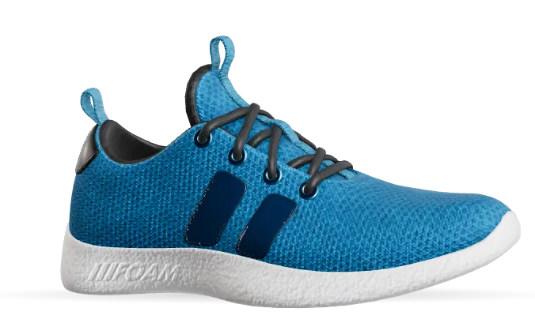

3D0%
ColourwayTide
01/03
Swipe the card to change colourway
Concept drop · Aero 3
Built to bounce back. Stride Aero 3, a concept running shoe.
Nitro foam, a 212 g knit upper and an 8 mm drop. A running shoe that feels like a head start.
Inside the Aero 3
Every gram earns its place.
- 01Aero knit upperEngineered mesh that breathes all the way round.
- 02Locked heelA moulded counter that holds without pressing.
- 03Nitro foam38 mm of springy midsole, light as it looks.
- 04Grip railRubber lugs mapped to six pressure zones.
The numbers
- 012345678901234567890123456789gWeightmen’s US 9
- 0123456789mmDropheel to toe
- 01234567890123456789mmStackat the heel
- 0123456789zonesGripmapped outsole
Your pair
US9
Pick your size.
True to size. Half sizes for the in-between days.
Concept only. Nothing is sold or sent.
Stride Aero 3
Your next personal best starts here.
Back tothe drop